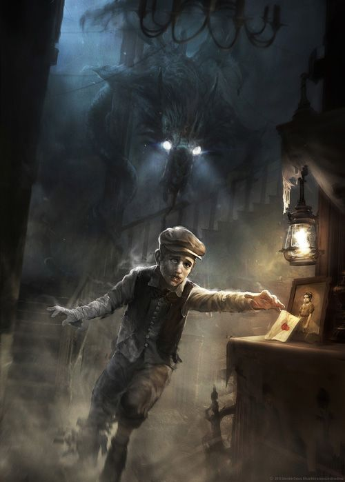
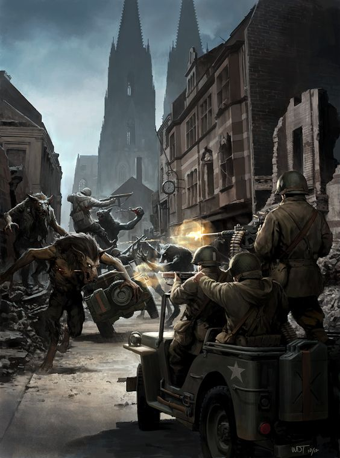
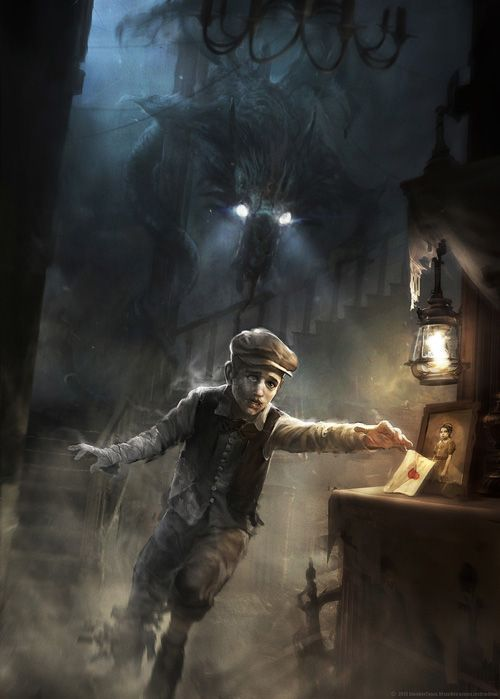
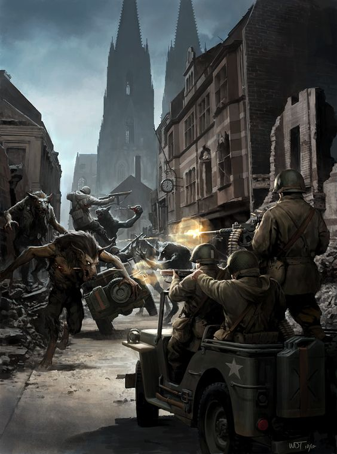

02
Где побывать
Аркхем
Вымышленный город в штате Массачусетс, США. Впервые упомянут в произведении Лавкрафта «Картинка в старой книге» (1920 г.).
Город находится недалеко от Иннсмута и Данвича, однако точное расположение неизвестно. Через Аркхем протекает река Мискатоник. В городе расположен знаменитый Мискатоникский университет, неоднократно игравший важную роль в произведениях Лавкрафта.
 


